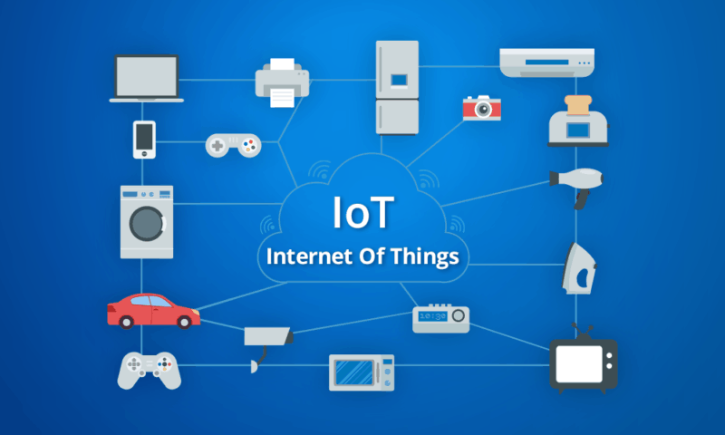

internet of things
Links:
Definition of the Internet of things:
The Internet of things is a system of interrelated computing devices, mechanical and digital machines provided with unique identifiers and the ability to transfer data over a network without requiring human-to-human or human-to-computer interaction.The definition of the Internet of things has evolved due to the convergence of multiple technologies, real-time analytics, machine learning, commodity sensors, and embedded systems. Traditional fields of embedded systems, wireless sensor networks, control systems, automation (including home and building automation), and others all contribute to enabling the Internet of things. In the consumer market, IoT technology is most synonymous with products pertaining to the concept of the "smart home", covering devices and appliances (such as lighting fixtures, thermostats, home security systems and cameras, and other home appliances) that support one or more common ecosystems, and can be controlled via devices associated with that ecosystem, such as smartphones and smart speakers.

Some selected examples of things that address and understand online without direct human intervention. Note that the understanding between the devices takes place directly and that a person is considered one of the terminals of communication just like the others. Things here mean any device or terminal or something that can be identified on the Internet by affixing an Internet address to it such as the car, TV, Google glasses and various household items such as fridge, washing machine, alarms, buildings entrances and air conditioners, and the list extends to include everything from other things such as goods and products available on Store shelves. It also expands to include animal collars on breeding farms, in reserves, in the seas, and even trees and forest elements. The rule in defining "internet" things is everything the Internet can learn about through well-known Internet protocols. And the human being in this case is the one who benefits from all these understandings and objections. And with some science fiction, the person himself becomes "something" if a certain Internet address is attached to him or his surroundings, such as by attaching glasses, a watch, a bracelet, electronic clothes, medical devices or equipment on him or inside his body.